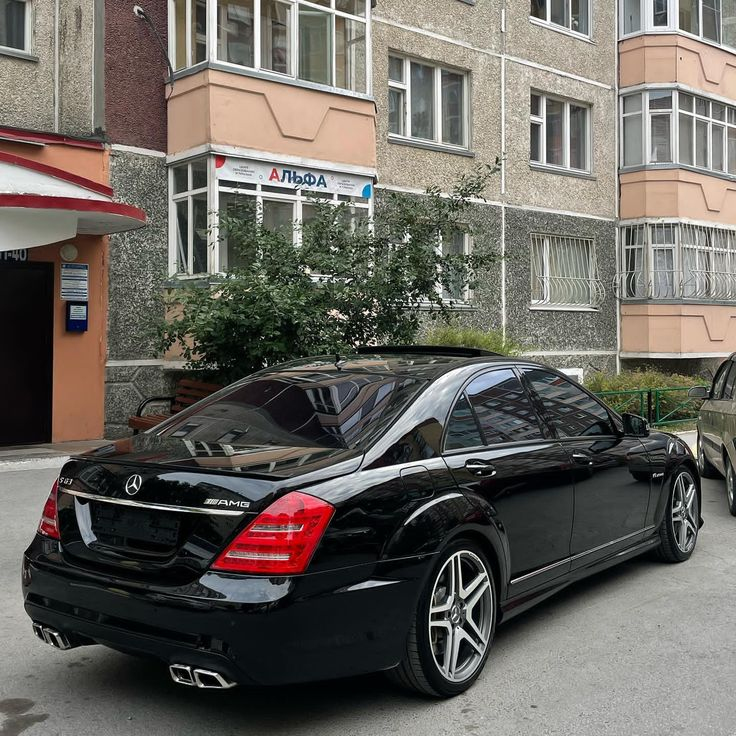
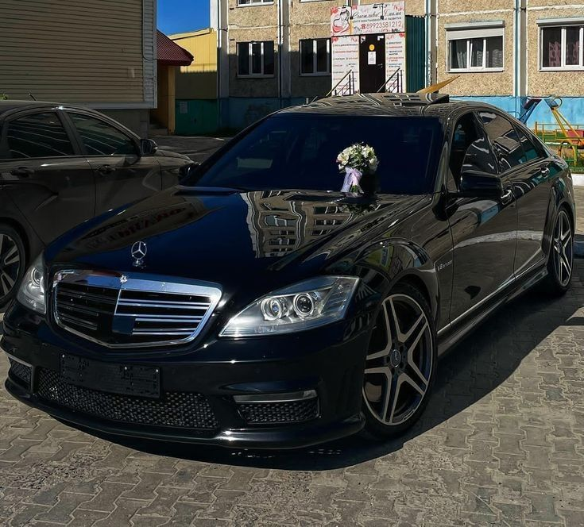
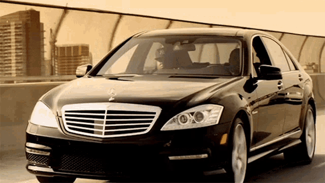
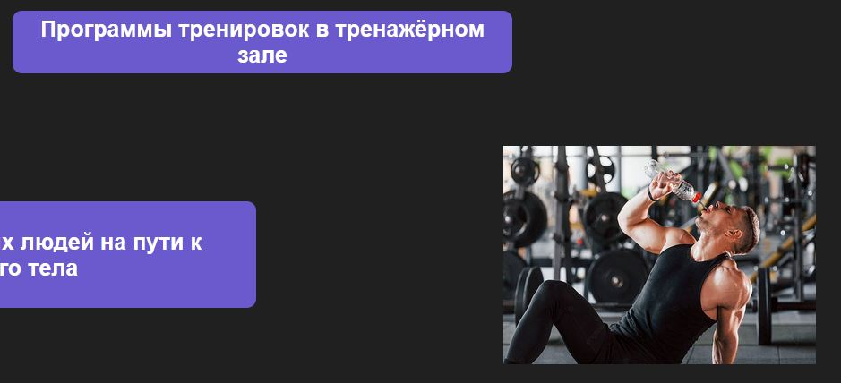

Модели
Mercedes-Benz W221 S-Class предлагает широкий ассортимент моделей, включая S350, S500 и S600. Эти автомобили известны своим роскошным интерьером, передовыми технологиями и выдающейся производительностью. Выпускался с бензиновыми (S 300–S 600), дизельными (S 320 CDI, S 350 CDI) и гибридными (S 400 Hybrid) двигателями, а также в высокопроизводительных версиях AMG (S 63 и S 65). После рестайлинга в 2009 году обновился дизайн, двигатели стали мощнее и экономичнее. Оснащение включало адаптивную подвеску, систему ночного видения и передовые системы безопасности.
История
|
История Mercedes-Benz W221 S-класса (2005–2013) — это путь совершенствования роскоши, инноваций и производительности.
Основные этапы:
- Разработка: W221 был представлен в 2005 году на Франкфуртском автосалоне как преемник модели W220. Дизайн стал более строгим и массивным, с акцентом на статусность.
- Технологические инновации: Впервые в S-классе появились такие системы, как ночное видение (Night View Assist), активный круиз-контроль Distronic Plus и система предаварийной безопасности PRE-SAFE. Мультимедийная система COMAND получила цветной дисплей и расширенные функции.
- Модификации: Модельный ряд включал версии с бензиновыми, дизельными и гибридными двигателями, а также мощные AMG-версии (S 63 и S 65).
- Рестайлинг (2009): Автомобиль получил обновленный дизайн с новыми фарами, бамперами и LED-освещением. Двигатели стали экономичнее, появилась гибридная версия S 400.
W221 стал эталоном для представительских автомобилей благодаря сочетанию роскоши, технологий и производительности.
|

|

|
Двигатели

|

|
Mercedes-Benz W221 оснащался широким выбором двигателей:
- Бензиновые: от 3.0-литрового V6 (S 300) до 6.0-литрового V12 с двойным турбонаддувом (S 600).
- Дизельные: экономичные версии S 320 CDI и S 350 CDI.
- Гибриды: S 400 Hybrid с 3.5-литровым V6 и электрическим мотором.
- AMG: мощные версии S 63 AMG (V8) и S 65 AMG (V12) для максимальной производительности.
|
|
Тюнинг
|
Некоторые компании, которые занимались модификацией Mercedes-Benz S-Class:
- Carlsson - известна своими высокопроизводительными модификациями и улучшениями для автомобилей Mercedes-Benz.
- Lorinser - предлагает различные пакеты тюнинга, включая изменения в дизайне и производительности.
- Mansory - специализируется на эксклюзивных модификациях и индивидуальных проектах для автомобилей класса люкс.
- Renntech - фокусируется на производительности и предлагает различные улучшения для двигателей и подвески.
- Kleemann - предлагает тюнинг для Mercedes-Benz, включая увеличение мощности и улучшение аэродинамики.
- Brabus - известная компания, специализирующаяся на высокопроизводительных модификациях, предлагающая улучшения двигателей, подвески и эксклюзивный дизайн.
Эти компании могут предлагать различные уровни модификаций, от косметических изменений до серьезных улучшений производительности.
|

|

|
Почему Mercedes-Benz W221 — единственный выбор для мужика, а не этих позорных кредитных коробок?
W221 — это король дорог, а кредитокорыто — раб парковок:
Кредитная "табуретка" только и может, что стоять во дворе и униженно ждать, пока её заберут на ТО. W221 — это машина, которая делает тебя хозяином ситуации. Каждый взгляд на тебя — это уважение, каждая поездка — это наслаждение. Комфорт, который заставляет завидовать:
В этих тошнотных кредитокоробках максимум — это кондиционер и "пластмассовый рай". В W221 ты чувствуешь себя боссом: кожа, дерево, мягкая подвеска, кресла, которые тебя обнимают. Это не салон, это твоя крепость. Сила и мощь против унылой экономии:
Кредитотележки со своими 100 л.с. и моторчиком от газонокосилки умоляют тебя не обгонять фуры. W221? Одно нажатие на педаль, и ты уже впереди. Это не просто езда, это полёт над дорогой. Респект на дороге:
Кредитные коробочки вызывают только жалость — "бедный пацан в рабстве у банка". W221 — это машина, которая заставляет людей уважать. Вылезаешь из неё, и к тебе уже относятся по-другому, даже если ты в спортивке. Ты вкладываешь в легенду, а не в пластиковую печаль:
Mercedes-Benz W221 — это машина с историей, с душой, с характером. Кредитное ведро — просто средство передвижения, которое станет бесполезным через пару лет. Забудь про унижение с переплатами:
Что толку от машины, на которую ты работаешь, вместо того чтобы она работала на тебя? W221 стоит каждого рубля — это инвестиция в стиль, комфорт и твоё имя. А кредитотачка? Это постоянный геморрой с ежемесячным напоминанием о твоей слабости.
Хватит быть серой массой в унылых кредитных тазах. W221 — это выбор для тех, кто уважает себя, кто хочет брать от жизни максимум, а не довольствоваться минимумом. Стань тем, кто рулит своей жизнью, а не тем, кто сидит за рулём кредитного рабства. Выбор очевиден.
|

|

|
|

|

|
Наша братва
- Конор Макгрегор — легенда смешанных единоборств, двукратный чемпион UFC и настоящий символ уверенности и решимости! 🔥💪 Его стиль боя, харизма и смелые высказывания сделали его мировым феноменом. Конор не просто боец — он пример того, как верить в себя и идти к вершинам. Любишь зрелищные поединки? Тогда следи за Макгрегором, ведь он всегда готов удивлять!Конор братан 🥊🍀
- Snoop Dogg — икона хип-хопа, мастер флоу и символ стиля. Его музыка — это сочетание харизмы, релакса и мощных вайбов, которые покорили мир. Включай Snoop Dogg, и каждое мгновение станет круче под звуки легендарного G-funk! 🎤🔥Snoop Dogg
- "Поле чудес" — легендарное игровое шоу, где каждый может испытать свою эрудицию и удачу! Отгадай слово, крути барабан и выиграй ценные призы. Захватывающая атмосфера, неожиданные сюрпризы и море позитива ждут тебя каждую неделю! 🎡✨Попасть на шоу можно через в....!
- Витя AK-47 — голос улиц и легенда русского хип-хопа. Его треки — это честность, энергия и неповторимый стиль, который заряжает миллионы слушателей. Если ты ценишь мощные биты и искренние тексты, включай AK-47 и почувствуй настоящий рэп! 🎤🔥
- Если хочишь, чтобы спина не бол бол то делай это.
- 🃏 Откройте для себя мир азартных игр! 🌟 Забудьте о повседневных заботах и погрузитесь в захватывающие приключения нашего казино. 🎰 Играйте в любимые игры, получайте щедрые бонусы и выигрывайте крупные призы! 💰 У нас вы найдете уникальную атмосферу, множество развлечений и шанс на большие выигрыши! Присоединяйтесь к нам и начните вашу игру уже сегодня! Перейти в ка$ино!
|


|


{kind=link}
{kind=link}
{kind=link}
{kind=link}
{kind=link}
{kind=link}